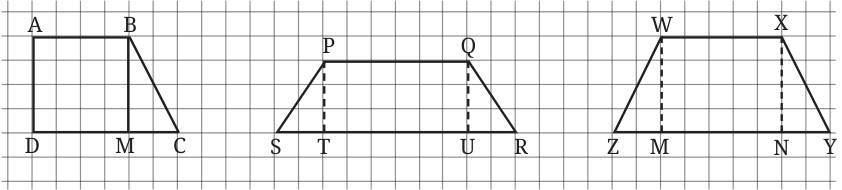
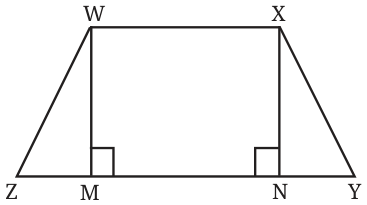
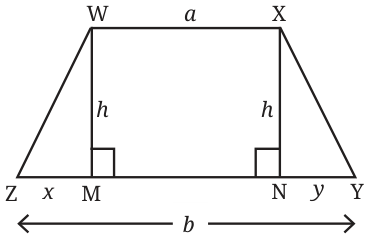
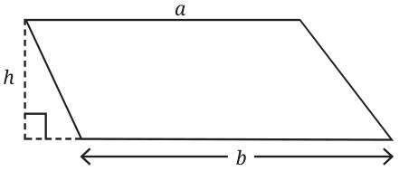
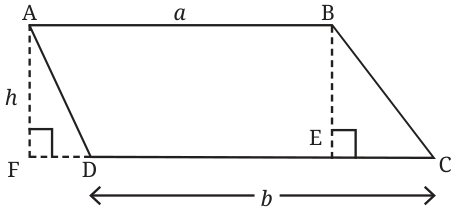

Find the areas of the following trapeziums by breaking them into figures whose areas can be computed.

One way of finding the area of a trapezium is by breaking it into a rectangle and triangles.
Consider a trapezium WXYZ with WX ‖ ZY. Find its area.

Construct WM \(\perp\) ZY, and XN \(\perp\) ZY (WM and XN perpendicular to ZY).
Is WXNM a rectangle?
\(\angle MWX = \angle NXW = 90^{\circ}\), since WX ‖ ZY and the interior angles on the same side of a transversal (WM and XN) add up to \(180^{\circ}\). Therefore, WXNM is a rectangle.
We have
Area \(WXYZ =\) Area \((\triangle WMZ) +\) Area \(WXNM +\) Area \((\triangle XNY)\)
\(= \frac{1}{2} \times MZ \times WM + WX \times WM + \frac{1}{2} \times NY \times XN\)
Let us assign letter numbers to the lengths that we need to find the area of the trapezium. Let \(MZ = x\), \(WM = XN = h\), \(WX = a\), \(NY = y\).
So we get

Area \(WXYZ = \frac{1}{2}hx + ha + \frac{1}{2}hy\)
\(= h\left(\frac{1}{2}x + a + \frac{1}{2}y\right)\)
\(= h\left(\frac{x + y + 2a}{2}\right)\)
\(= \frac{1}{2}h(x + y + 2a).\)

We have taken the length of one of the parallel sides as \(a\). Let \(b\) be the length of the other parallel side.
Can the area of the trapezium be expressed in terms of \(a\), \(b\) and \(h\)?
To replace \(x + y\) in the area expression with \(a\) and \(b\), observe that \(b = x + y + a\). Subtracting \(a\) from both sides, we get
\(x + y = b - a.\)
Using this, we get
Area \(WXYZ = \frac{1}{2}h(b - a + 2a)\)
\(= \frac{1}{2}h(a + b).\)
Therefore,
Will this formula hold for a trapezium that looks like this?

There are different ways of approaching this, which are sketched below. Complete the arguments.
Approach 1: Rectangle and Triangles

Area \(ABCD =\) Area \(ABED +\) Area \(\triangle BEC\)
Area \(ABED =\) Area \(ABEF -\) Area \(\triangle AFD\)
Approach 2: Parallelogram and Triangle